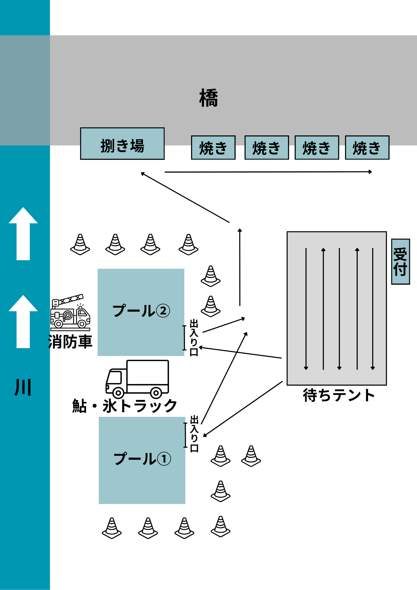

１．実施概要
| 項目 | 内容 |
|---|---|
| 日時 | 8月 があっぱ祭り当日 午前10時〜 |
| 場所 | 祭り会場内（設営場所） |
| 対象 | プールに一人で入れる年齢〜小学6年生 |
| 定員 | 約500名（先着） |
| 参加費 | 無料 |
| 事前予約 | なし（当日参加のみ） |
２．実施内容・運営方法
受付・整列
テント下に2列で並んでいただき、順番に案内します。事前予約・整理券は不要で、当日参加のみとします。
つかみ取り体験
7メートル四方のプールを2基設置し、1プールにつき同時に約10名が入れます。
つかみ取りが終了した人を速やかにプールの外に案内し、常に10名程度がプールにいるように、プールの中にいる状態を保ちながら円滑に運営します。
プールは年齢で分けず、兄弟・きょうだいで一緒に入れるようにします。（7メートル四方のプールに10名程度であれば、年齢差があっても十分な安全スペースを確保できます。）
1人1匹まで、自分でつかまえます。
鮎の準備数
鮎は約500匹を用意します。（鮎の大きさにより匹数は変動するため目安）
焼き・提供
つかみ取りをした鮎は一旦回収し、焼き場でスタッフが順次焼いていきます。
自分が取った鮎をそのまま焼くわけではなく、焼き場では連続して焼き続ける方式です。
焼き上がった鮎を参加者に1人1匹ずつ提供します。
３．参加費の無償化について
企画部会では有料化の検討がなされていましたが、本企画は無料での実施を提案します。理由は以下の通りです。
本企画は子どもたちの体験・思い出づくりを目的としたものです。一度でも参加費を徴収すると、翌年以降に無料に戻すことが難しくなります。地域の子どもたちに開かれた事業として、無償で継続できる仕組みにしておくことが重要と考えます。
前回は祭りの前に開催し事前受付も行っていたため、参加者は祭りの流れの中で気軽に参加できる環境が整っていました。しかし今回は午前10時からの開催となるため、つかみ取りのために一度来場し、濡れた後に着替えのためいったん帰宅してから、改めて祭りへ来るという流れになる可能性があります。参加者にとってすでに来場の手間が増える状況であることを踏まえ、参加費の負担をなくすことで参加しやすい環境を整えます。
参加費を徴収する場合、保健所への臨時営業許可申請が必要となります。屋外での腹出し（内臓処理）などの調理行為が制限され、現在想定している青年部主体の運営方法では実施が困難になります。甲佐町の事例のように焼きのプロに外部委託すれば解決できる部分もありますが、本企画は青年部が自ら運営するものであり、外部委託の導入は現実的ではありません。
参加費がなければ受付での金銭授受が不要となり、スタッフの負担軽減・トラブル防止にもつながります。
４．広報活動
実施内容
- チラシ作成・配布
- WEBサイトの作成
- 各種SNSでの告知
- PTAへの呼びかけ
５．準備物
プール設営関係
- ブルーシート（9メートル四方）
- 単管・インパクトドライバー・結束バンド
- 消防車（河川からの取水用）
- パイロンバー（役場より借用）
- ビニールテープ（侵入禁止ライン・待合列の設置用）
受付・運営関係
- テント（受付用）・スーパーテント
- 受付テーブル
- 拡声器
- 案内用看板
- ビニール袋
調理・衛生関係
- U字溝（あゆ焼き用）
- 裁き台・包丁
- 串・塩・炭・着火剤・ライター
- バケツ
- クーラーボックス・氷
- 消毒用アルコール
- ゴミ袋
その他（推奨）
- 暑さ対策として飲み物の準備（スタッフ・参加者向け）
６．スタッフ・ボランティア体制
本企画はオペレーションが多岐にわたるため、青年部員だけでの運営は困難です。以下の係が必要となります。
| 係 | 主な役割 |
|---|---|
| プール監視係 | 参加者の安全確認・プール内の状況管理 |
| 誘導・整列係 | 待合列の案内・スムーズな入退場の誘導 |
| 受付係 | 参加者の案内・人数管理 |
| 魚捌き係 | アユの内臓処理 |
| 焼き係 | アユを順次焼き、参加者へ提供 |
| 鮎追加係 | アユの在庫状況を確認し、必要に応じて追加・補充を行う |
| 水・氷追加係 | プールの水量および氷の残量を管理し、不足時に補充対応を行う |
| その他補助 | 各係のサポート・ゴミ管理など |
ボランティアの確保
- 学校のボランティア活動が内申点に関係する取り組みの一環として活用できることから、地域の中学・高校生に対して正式な文書を通じてボランティアを募集します。
- 一般ボランティアおよびPTA有志にも広く協力を呼びかけます。
７．当日会場レイアウト
